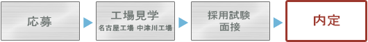

当社の採用選考基準
当社では学業成績よりむしろ人物に重点を置いた選考を実施しています。
応募から採用面接の流れ

| ■ 今西 寛 ■ |
| 採用担当者 |
最初に工場見学をしていただきます。そこで応募意思を明確にしていただき、採用試験を行います。皆さんから見て、当社が受験するに値する会社かを審査していただく訳です。
次に、採用面接試験は１段階のみで審査します。
|
結局は皆さんの普段の対人関係能力が問われることになります。堂々と、自信を持って受験していただきたいと思います。
※ 応募の段階で、当社のニーズに合うかどうか書類審査を実施します。
※ 工場見学から採用試験に至るまで交通費は全額会社負担です。
内定後について
内々定連絡→内定通知（10月以降）→内定者懇談会→入社→導入教育 |
入社に先立って、書類連絡が主になります。いろいろな手続きを細かく書いておりますので見落とさないよう、確認事項があればその都度、担当者宛に連絡をお願いします。
導入教育は1ヶ月強実施します。当社は大同特殊鋼グループですので、最初の10日間程度、グループの合同教育に参加していただきます。その後当社独自カリキュラムによる実習を実施します。